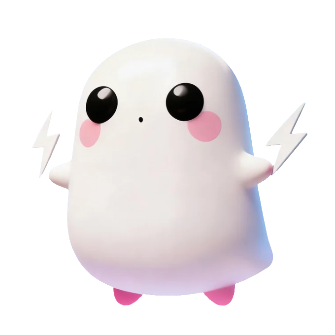

为了保证你的对话隐私和能量供应，YYOU 需要连接到你自己的 Coze 能量站。

按住麦克风与YYOU对话
输入你的 Coze Token，让YYOU能够和你对话~
长按右下角的麦克风图标，看到紫色脉冲波纹出现后开始说话，松手即发送。你会看到文字实时跳进输入框。
试着在对话里输入 ⚡️ 或 ☁️，观察背景的动态弥散光晕是如何随之流转的。
YYOU 回复时会像真人一样停顿和思考，请享受文字一段段跃然纸上的节奏感。
小贴士：Token 就像 YYOU 的"零食"，填上它，YYOU 才有力气陪你聊天哦！